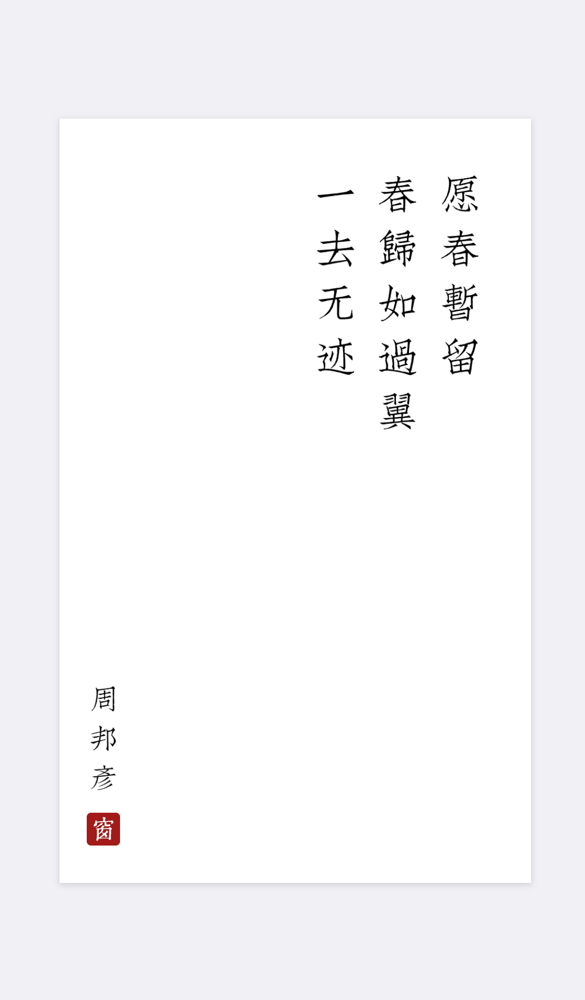
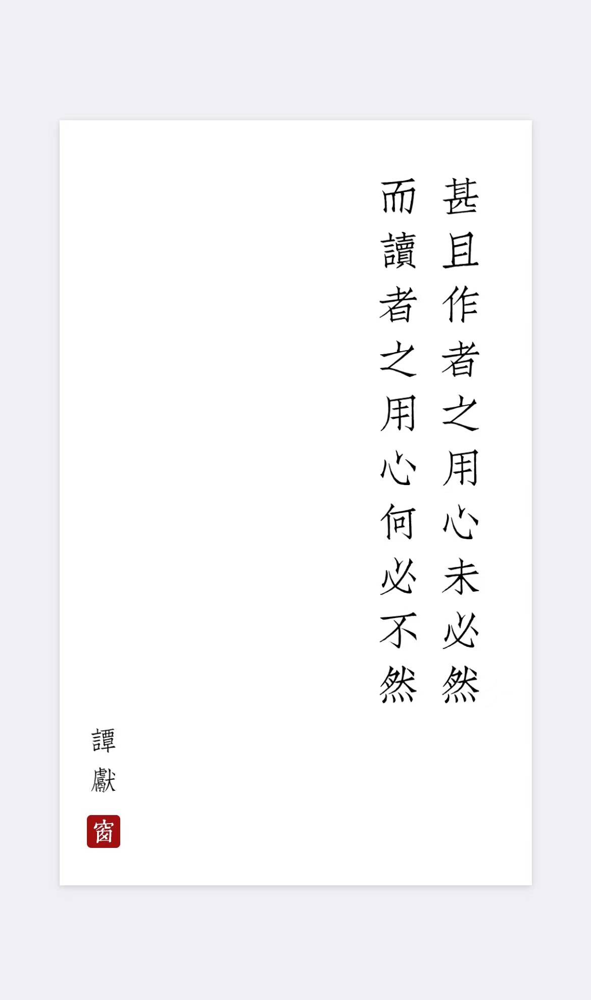
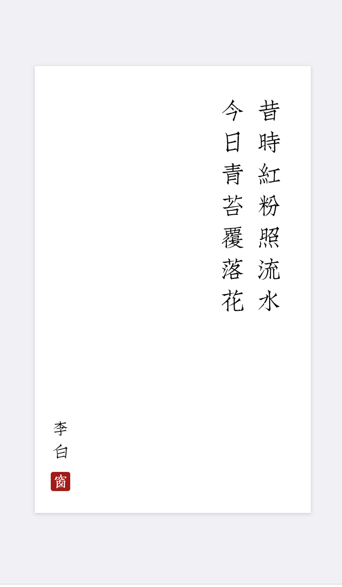
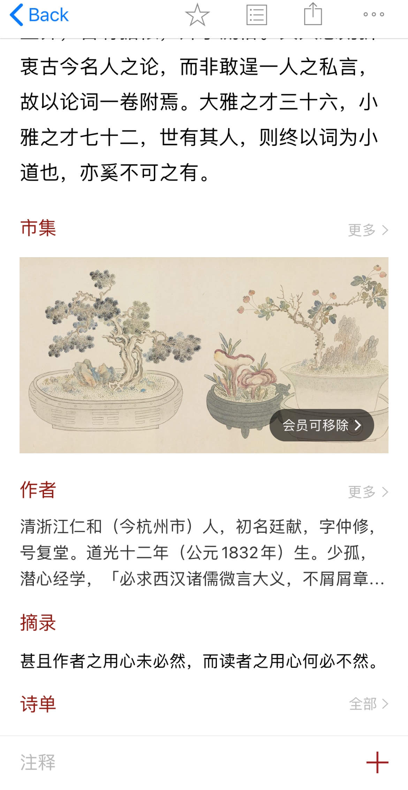

关于我们
西窗市集
中华诗词库
首页
中华诗词库
让您一分钟拥有自己的中华诗词库
五千年文化，100万诗词文库 按朝代、作者、作品分类 支持全文检索、简繁切换、字体切换 精选数万条诗词名句，卡片式切换翻阅 可自由制作卡片 诗经、道德经、古诗 十九首等选集，爱情、孤独、田园等主题 春夏秋冬、梅桃荷菊、山水日月等写景 中国传统节日与24节气 作为一款已被苹果公司推荐了20次的至美应用，西窗烛在针对诗词、传统文化等方面做出了以下尝试：一方面，持续收录并完善经典唐诗宋词、传统文化典籍的内容库建设。除了扩大收录面，保证收录的全面、完整、准确，同时优化针对收录内容的分类展示、查询检索、深度呈现、用户互动功能。 西窗烛的搜索功能 目前支持按照诗词、作者、用户搜索 目前，西窗烛已有针对诗词的5大分类：选集类、主题类、写景类、节日类、节气类。对于每一首收录的诗词，除了展示诗文，还有与诗文配套的评析、注释、译文、赏析、辑评等。而用户互动参与则体现在，用户可以发布对应诗文的朗诵音频，其他用户可以评论、点赞等。



